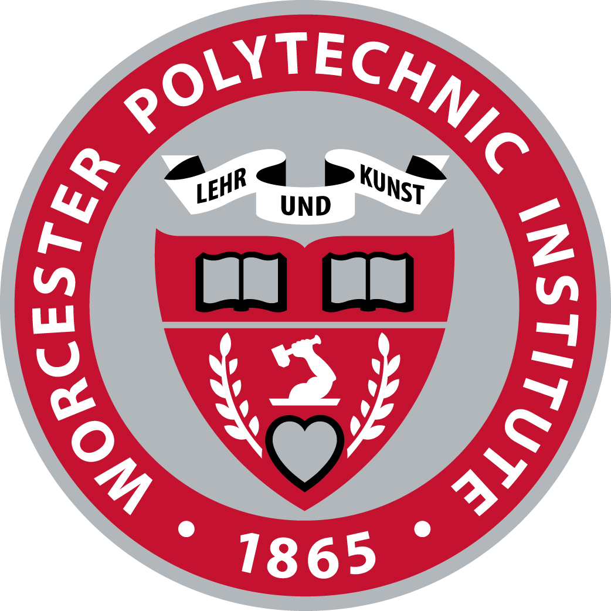

Experience
Apex Microdevices Feb 2024 - current
Research Scientist - Machine Learning
Agot Co. May 2023 - Aug 2023
Computer Vision Intern
Education

Worcester Polytechnic Institute Jan 2022 - Dec 2023
Research Scientist - Machine Learning
Kerala Technological University Aug 2017 - May 2021
Mechanical Engineering